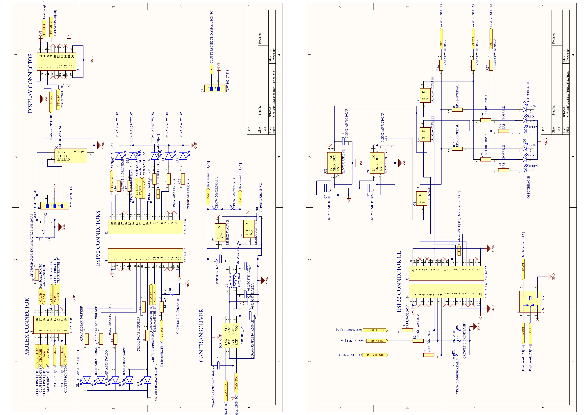
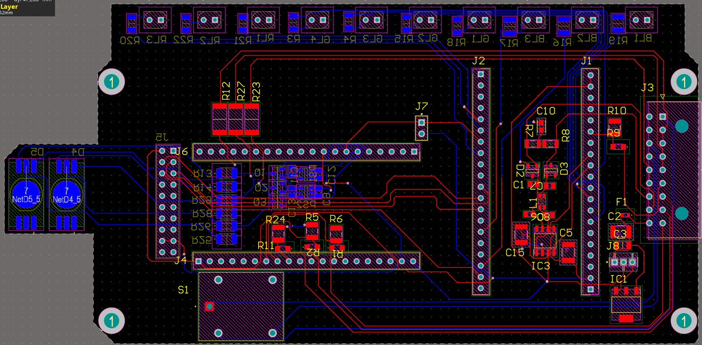
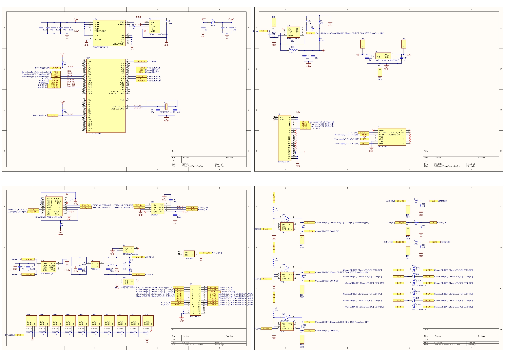
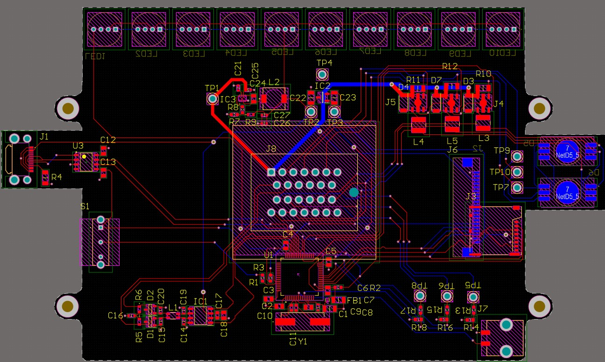

I'm a Telecommunications Engineering student currently completing my bachelor's degree and Final Bachelor's Thesis. I also have experience as part of a MotoStudent team, working on PCB design and firmware development in a collaborative engineering environment.
Final Bachelor's Thesis
The project i'm currently working on focuses on developing an improved and more independent dashboard for an electric competition motorcycle, combining custom PCB design, embedded systems, CAN communication, and data logging.
MotoSpirit ESEIAAT
As part of the MotoSpirit ESEIAAT team, I worked on the electronics of an electric competition motorcycle, focusing on the design and development of its dashboard. My work involved PCB design, embedded firmware development, and CAN bus communication, giving me experience in developing electronics in a racing environment.
As part of the MotoSpirit ESEIAAT team, I worked on the electronics of an electric competition motorcycle, focusing on the design and development of its dashboard. My work involved PCB design, embedded firmware development, and CAN bus communication.
I was responsible for designing the dashboard PCB and developing its firmware, using two plug-in
ESP32 modules as the main microcontrollers. I worked with the motorcycle's CAN bus to receive and process data such as
RPM, temperatures, and battery information.
This project gave me hands-on experience with the complete PCB development
process, from the initial schematic and PCB routing to the final assembled board and its integration into the motorcycle.




For my Bachelor's Thesis, I am designing and developing a custom dashboard for an electric competition motorcycle, building on my previous experience with MotoSpirit. The project focuses on the complete development of an embedded electronic system, featuring a dedicated PCB with an integrated STM32 microcontroller, CAN bus communication, data logging, and display integration.
The dashboard receives and processes data from the motorcycle's sensors, inverter, and motor, such as RPM, temperatures, and battery information, and stores relevant data on an SD card for later analysis. The project covers the complete development process, from system design and schematic capture to PCB layout, firmware development, assembly, and testing.

